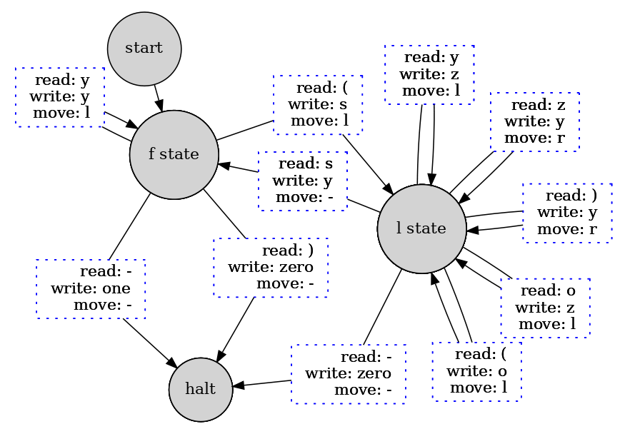
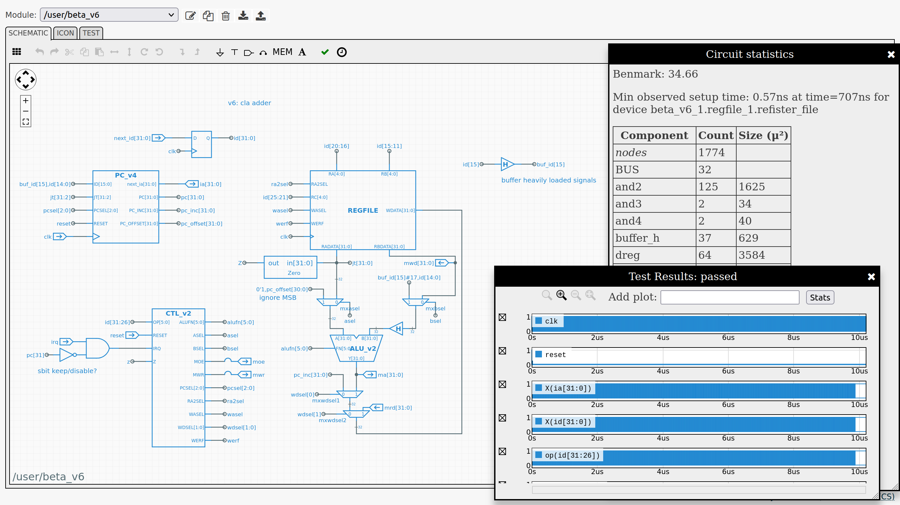

Coming to robotics from a mechanical engineering background, I found myself wanting to know more about computation, computer science and software engineering. The projects shown here summarize some of my self-learning experiences.
In this project you download and compile all the separate pieces to assemble your own bootable Linux distro. No coding is done in this project, but you need to be able to follow instructions, know how to debug and know a bit about UNIX. I managed to finish the project and registered on their database here. My LFS id is 28548.
The 6502 is praised for it’s simplicity and remembered for the impact it had on personal computing, so I decided to work though this tiny e-book I found called Easy 6502. After reading the little book, I modified the snake game presented there to reinforce what I had learnt. The modifications make snake’s stomach contents visible. The code can be found on my GitHub here and the video below shows a snippet of the gameplay.
After playing with 6502, I was confident enough to try Nand2Tetris. The subtitle “Building a Modern Computer From First Principles”, is actually just the first half of the course! In part 1, using only the NAND gate and DFF’s, you build the chips to create the Hack computer: an educational (MISC) architecture. This is done in an educational hardware description language provided with pre-written tests to make development incremental. By the end of the course you write your own assembler for Hack in the programming language of your choice. I did it in Python.
In part 2, you build a compiler targeting Hack for the Jack object-oriented programming language which the authors created: I stuck with Python. You also get to implement any project of your choice in the Jack language to learn how it works. Typically, students go for Tetris, hence the name. I re-implemented snake. In the final project, you implement the system calls provided by a bare-bones “operating system” in Jack.
The clip below shows the hardware emulator running my snake clone. When loading snake without the system binaries, the emulator offers to provide built-in versions. Then, when loading a version with snake and the system binaries, the emulator immediately loads the program.
Instead of the direction keys I used vi keys because I was the target audience of the game. You set the speed and length of snake at the beginning of the game to help debug during development. I implemented playing the game at different sizes as a programming exercise, this is not demonstrated in the video.
I worked through the worksheets and labs of the 2017 version of this MIT ocw course together with its companion website. Computational structures explores important topics that N2T skips: models of computation, cost/performance trade-offs, virtual memory, caching, memory hierarchy, interrupts, scheduling, pipelining and concurrency, compiler optimizations.
There are three major challenges in this course, completed using instructor developed tools:
TMSim Turing machine simulator.Jade circuit simulator.TinyOS in the BSIM ‘Beta’ emulator.The companion website implements all these tools using browser technologies. To see my answers to the labs in your browser:
The video below shows a Turing machine programmed to halt on a 1 if the parenthesis on the input tape are balanced and 0 if they are not. Doing it with only two states gets you full marks. This was the most challenging part of the FSM lab. To see it in action, scroll down and click ‘Open TMSim in a new window’, click ‘TMSim assemble’ and then ‘Checkoff’.
To do it in just two states, I developed the diagram shown below. The f state represents ‘found’ and l is for ‘looking’. The o symbol is for ‘open’ and s is for ‘start’. Symbols z and y are arbitrarily named. The l motion means move the tape left, r is right and - means don’t move. This corresponds to the language of TMSim as seen in the video.

The final lab is Optimizing the Beta that you built in the previous labs. Here a ‘Benmark’ of 20 is considered very doable and 40 requires considerable insight and investment of time. Though not considered a course requirement, I tried to pipeline my design but failed. See the lab for more details. My final working design is tested in /user/test_v7 and got a benchmark of 34.66. You can also inspect the Beta for this test looking at /user/beta_6 and descending into its sub-components.

The TinyOS lab provides a minimal time-sharing OS written in Beta assembly. The provided code has two user processes: one periodically prints a counter value and the other takes user input and converts it to Pig Latin. There are three design problems in this lab:
BSIM has a schematic view that shows the assembly code being executed on the hardware and an editor mode that follows along line by line as the program executes. The video below showcases these features.
The next video shows the end result of the modifications done in the TinyOS lab.
I also started studying operating systems with materials from here, here and here, and plan to continue when I have more time.
I learnt a lot doing these projects and feel that I have a solid understanding of computation. It is not so much of mystery to me anymore how my code gets executed! I am confident that these lessons will help me to be a better software engineer.